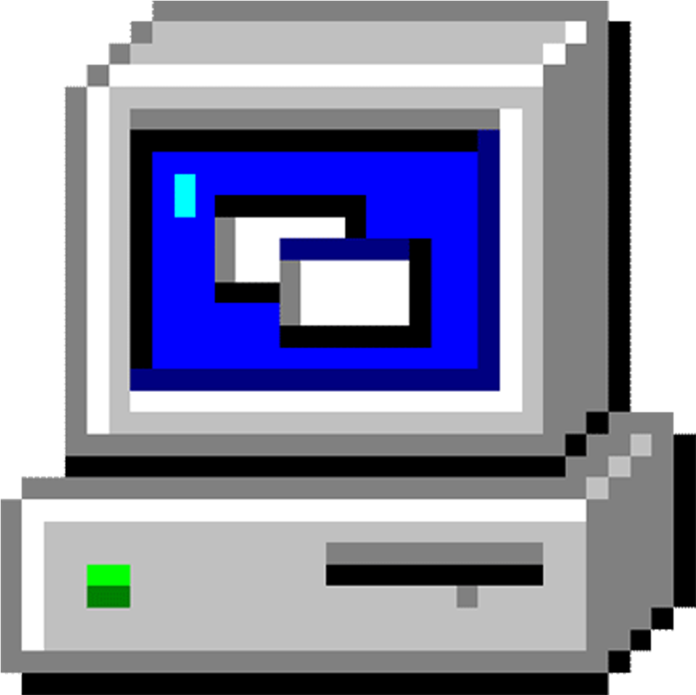
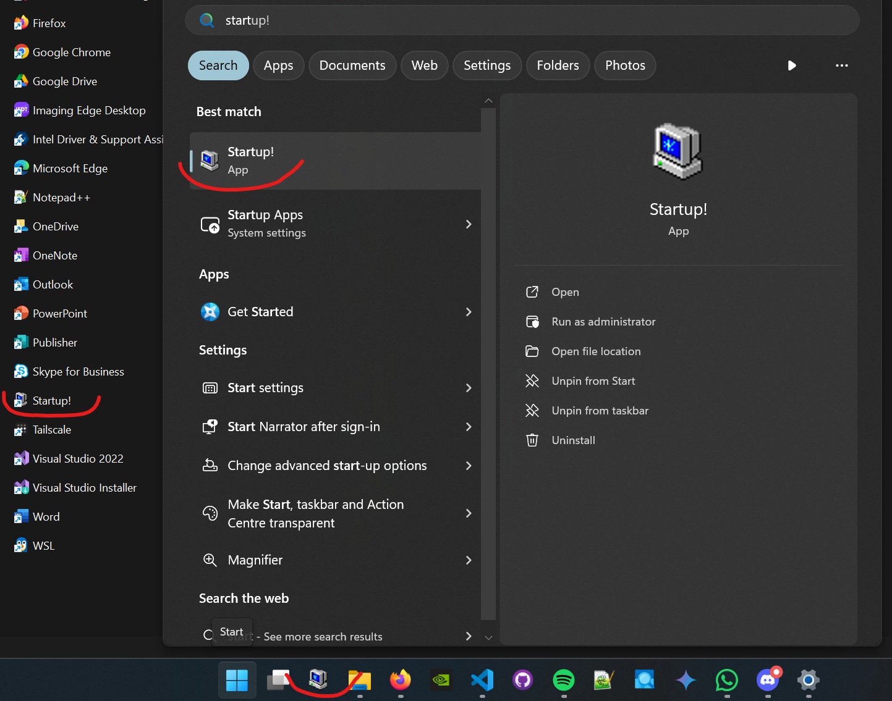

Why a startup script?
Confession time. Pre-COVID I worked for a Swiss bank — it was the whole corporate package. Working from a crowded office, open space, dedicated desks, dedicated desktop PCs, hundreds of people. And we never turned the PCs off, some of them were running constantly for months. Not very eco-friendly behaviour, either from the company side or from the employees. But there were legit reasons for this and the company had much bigger sins on their books.
As for the reasons for constantly turned on machines — the proprietary frameworks and tooling we used were awfully heavy and slow. If you were occasionally forced to kill all the processes — due to an update or system crash — getting them all up again took an hour or more. Developer tools, pricing systems, connections to Monte Carlo farms, downloading trade data, analysis definitions — you name it, we used it.
One tidbit to get this point across — in 2019 we still used 32-bit Win7, which had a cap on single-process memory consumption to 4GB. We had a universally used hack to extend this to 8GB for Excel, since the default wasn’t enough for many of our pricing sheets.
When I parted ways with the company post-COVID, I got a corporate laptop from the new employer. The office was much sparser, quieter and with ‘hot seats’ approach. I worked mostly remotely either way. This meant switching off the company machine each day, as the VPN connections and certificates wouldn’t last overnight. I was extremely annoyed with opening all of the daily tools again and again, after getting used to having it all waiting for me to jump right in.
Hence the need for a startup script to open all of the apps, tools and files programatically. It won’t cover everything, like authorizations or connections but still a little helper to start the day.
To spice things up, we will overengineer the hell out of it and use generic typing, generators and decorators :D.
The startup script
Public interface
Let’s first think about the design and what we want to achieve. Imagine the code being split into two parts:
- the hidden logic layer, the worker that does stuff and
- the public interface that integrates with the rest of the codebase or is called at the top level, the manager.
We can start by creating the public interface, see what we want to achieve and later deal with filling in a working implementation. You can either define the logic functions as mocks, or just live with linting issues. This is what my desired usage is:
We specify programs to be launched, open all files in a chosen temp folder and run a list of shell commands. After each step there should be some delay to avoid spamming system with process calls. Certain steps might be more time consuming, like cloud services authorization. Those need longer delay. On the other hand, specifying delay for each task would be cumbersome, most cases would be fine with some default value. We end up with a design that our soon-to-be workers start_programs, start_work_files, and run_commands expect lists of either task or (task, delay_seconds). We can now start the implementation by figuring out how the delay time should be defaulted if not specified.
Decorator defaulting the time delays
Now we can start the implementation. We want the workers to be called with a list of tasks, but a task can be either a command or a tuple including the delay. Let’s not include some complicated conditionals in each of the workers — that would be annoying and potentially get out of sync at some point.
Other way to do this is to add a default delay to all non-tuple items. We can implement that as a separate defaulting function, which we would call in each worker. But — being more clever! — we could also use a decorator that changes the workers’s signature.
from functools import wraps
from collections.abc import Callable
from typing import TypeVar
T = TypeVar("T")
Task = tuple[T, int]
TaskList = list[Task[T]]
TaskListOptionalDelay = list[Task[T] | T]
DEFAULT_DELAY_SECONDS = 4
def with_optional_delay(
task_worker: Callable[[TaskList[T]], None],
) -> Callable[[TaskListOptionalDelay[T]], None]:
"""Add default delay to all non-tuple items.
Args:
----
task_worker: A function that takes a list of tasks.
"""
@wraps(task_worker)
def task_defaulted_worker(task_list: TaskListOptionalDelay[T]) -> None:
"""Add a default delay to tasks in a task list if no delay is specified.
Args:
----
task_list: A list of tasks with optional delays.
"""
tasks_with_defaulted_delays: TaskList[T] = [
item if isinstance(item, tuple) else (item, DEFAULT_DELAY_SECONDS)
for item in task_list
]
return task_worker(tasks_with_defaulted_delays)
return task_defaulted_workerFirst, for convenience, let’s define a template type annotation:
- The generic variable type is conventionally denoted by
T. - A
Taskis a tuple of a generic taskTand anintdelay. - A
TaskListis a list ofTasks. Simple. - A
TaskListOptionalDelayis a list ofTasks orTs. Those are the guys we are going to turn intoTaskLists.
The decorator with_optional_delay adds a default delay of 4 seconds to all non-tuple items. Its input is a worker function that already expects a TaskList. It fills in the missing delay with the default value and passes it to the decorated function.
Main workers
With the preparation done, we can start with the workers. For the programs we will be launching, we need to look up the exact paths of the executables. Let’s define a Program enum that would wrap those up in readable nice names. For working with system paths we will use pathlib.Path that provides high-level interface.
from enum import Enum
from pathlib import Path
class Program(Enum):
"""Types of programs."""
POWERSHELL = Path(r"C:\windows\system32\windowspowershell\v1.0\powershell.exe")
NOTEPAD = Path(r"C:\Program Files\Notepad++\notepad++.exe")
FIREFOX = Path(r"C:\ProgramData\Microsoft\Windows\Start Menu\Programs\Firefox.lnk")Other than that, the main workers start_programs, start_work_files, and run_commands are simple. They just iterate over the provided TaskList and do the respective action for a given Task.
@with_optional_delay
def start_programs(
programs: TaskList[Program],
) -> None:
"""Start listed programs.
Args:
----
programs: List of programs to start.
Can be a string or a tuple. If a tuple is given, the first
element is the name, the second is the delay.
"""
for program, delay in programs:
start_process(
name=program.name,
path=program.value,
delay=delay,
)
@with_optional_delay
def start_work_files(
directory_tasks: TaskList[Path],
) -> None:
"""Start all files in the work folders.
Args:
----
directory_tasks: List of tasks with paths to work folders.
"""
for path, delay in path_files(directory_tasks):
start_process(
name=path.name,
path=path,
delay=delay,
)
@with_optional_delay
def run_commands(
commands: TaskList[str],
) -> None:
"""Run all commands in the command list.
Args:
----
commands: List of commands to run.
"""
for command, delay in commands:
run_command(command, delay)List all files in list of directories
Notice the use of path_files generator above. When working with complex iterations, it’s a good practice to create a generator that wraps the iteration details. It is beneficial for readability and maintainability, especially in cases where you need to:
- yield multiple values at once (ex. yield path, delay for path in directory),
- have nested iterators (ex. for directory in list for path in directory),
- filter the iteration (ex. for path in directory if filter(path)).
Here we’ll have all three of them combined!
NAME_EXCLUDES = ("$", "tmp")
EXT_EXCLUDES = ("exe",)
def filter_excluded(
path: Path,
) -> bool:
"""Filter path based on name and extension exclude lists.
Args:
----
path: Path to filter.
"""
return (path.stem not in NAME_EXCLUDES) and (path.suffix not in EXT_EXCLUDES)
def path_files(
directory_tasks: TaskList[Path],
) -> Generator[tuple[Path, int], None, None]:
"""Generate all files in the work folder that are not excluded.
Yields the folder path at beginning of the generator.
Args:
----
directory_tasks: List of tasks with paths to work folders.
"""
for folder, delay in directory_tasks:
yield folder, delay
all_files = folder.glob(FILES_IN_TREE_PATTERN)
filtered = filter(filter_excluded, all_files)
for file in filtered:
yield file, delayThe filter_excluded function filters out files based on exclusions in name and extension lists. Path.stem and Path.suffix are used to check if the file name or extension is in the lists respectively.
Interacting with the OS
With all of the framework prepared, the next step is to interact with the OS. To open a file, folder or run an app, we can use the os.startfile function. All the rest of the start_process function is just utility logging. For running a shell command we can use the subprocess module, calling powershell with the powershell.exe and adding the command to run.
import os
import subprocess
import time
def start_process(
*,
name: str,
path: Path,
delay: int = DEFAULT_DELAY_SECONDS,
) -> None:
"""Given a path, starts the target.
Behavior:
* Minimizes all windows.
* Depending on the path target:
* executable files are run,
* content files are opened with system default program,
* folders are opened with system explorer.
Args:
----
name: Name of the process to start.
path: Path to the target.
delay: Time to wait after starting the process.
"""
if path.is_dir():
logger.info("Opening folder %s", name)
if path.suffix in (".exe", ".lnk"):
logger.info("Running app %s", name)
else:
logger.info("Opening file %s", name)
os.startfile(path)
time.sleep(delay)
def run_command(
command: str,
delay: int,
) -> None:
"""Run a powershell command.
Args:
----
command: Command to run.
delay: Time to wait after starting the process.
"""
_ = subprocess.call(
f"powershell.exe {command}",
shell=False,
)
time.sleep(delay)The last bit of convenience
We got it, friends, the script works and the job is done. But… do you recall the last time you googled a shortcut for a semi-frequently used functionality? Do you still remember the shortcut, or use it each time you need the functionality? Convenience needs to be convenient (obviously). So let’s make the usage of our script as seamless as possible.
In Windows OS the best way for me would be to have a shortcut that would run it with one click. We could pin it to the taskbar and start menu. To create one:
- Go to any folder, right-click and select
New > Shortcut. - In the guide that pops up paste in
%systemroot%\System32\cmd.exe /c "python.exe $1"where$1should be replaced by the path to your script. You can also replacepython.exewith interpreter path of any venv you wish. - Optionally, you can later change the icon for the shortcut (needs to be
.icofile). I like to roll with Win-98 style ‘My Computer’ icon. - Copy the shortcut to start menu directory. For Win11 it’s
C:\ProgramData\Microsoft\Windows\Start Menu\Programs. You should be able to see it in start menu already. Now you can pin it to the taskbar.

That’s a good enough reminder and convenience tool for me. You might need some different setup, especially for another OS. For Linux, you might try to leverage activate or bashrc scripts in your working setup.
Further extensions
There are a couple more things I wish this guy could do for me still:
- Changing Teams status to green - there’s a MS Graph API that could do this but we would need to manage Azure authorizations through the script. I am not up to that, especially on a work account. Might experiment on personal one in the future.
- Display placement of opened processes — I have 2 displays (which you could count as 4, due to the size format) and I am very particular about where each app should go. I would love the apps to open where they should. This is however OS specific, for Win it require to mingle with win32api. Yet another project for the future.